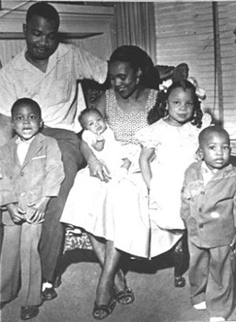

Based on some racially ridiculous comments received recently here (and for the reader gratefully deleted before posting) it seemed time to reproduce at Sipsey Street something that was originally posted in happier days on Pete's website Western Rifle Shooters Association back on 6 August 2008, setting forth my own opinions on race and racism.
Mike
III
Birmingham: Race and Armed Defense of Individual Liberty and the Republic
by Mike Vanderboegh
4 August 2008
"Nonviolence did have its day. Nonviolence unquestionably defined the black freedom movement from 1954-1963 -- through the Montgomery Bus Boycott, the lunch counter sit-ins, and the Freedom Rides. But by the end of 1962 Martin Luther King and the more militant nonviolent organizations had fallen victim to state repression and terrorism. The Student Nonviolent Coordinating Committee (SNCC), CORE (the Congress of Racial Equality), and Southern Christian Leadership Conference (SCLC) had all failed to secure local reform, voting rights or protective federal legislation. Appeals to the conscience of whites had foundered in the South and were having limited success in the North. By the beginning of 1963 the Kennedy Administration was backtracking on promised civil rights legislation. Terrorism and legal repression had so demoralized the movement that activists concluded that federal intervention was their only salvation. Activists were learning that the myth of nonviolence rested on a perilous underestimation of racism and a misplaced confidence in the American conscience and democratic institutions.
Then came the Birmingham campaign in 1963 and, more important, the Birmingham riots. The first riot occurred on 3 May after police opened up with water cannons on protesters. Young black men, nonpacifists who had previously lingered on the sidelines, now retaliated with bricks and bottles. On 4 May three thousand blacks, most of whom were uninvolved in nonviolent marches, assembled in downtown Birmingham and clashed with police again. Three days later a peaceful protest sparked more displays of force by nonmovement blacks, including several hundred who encircled two police officers. Finally, in the early hours of 12 May a massive riot broke out in response to two Ku Klux Klan bombings the night before. For the first time in the history of the civil-rights movement, working-class blacks took to the streets in a violent protest against police brutality and Klan terror. The young blacks who defied King's strictures irreversibly altered the strategy of the civil rights movement, raising the specter of massive black civil violence and ultimately forcing the first real concession in the form of the Civil Rights Act. From Birmingham forward, every peaceful nonviolent protest carried the threat of black violence. The Birmingham riots marked the end of nonviolence and the advent of a movement characterized by both lawful mass protest and defensive violence." -- Deacons for Defense, Lance Hill, UNC Press, 2004, pp. 259-260.
"Bombingham"


Civil rights activist A.D. King and family, circa 1963.

The King home on 11 May 1963 after the Klan hit it with two bombs while they were inside. The same night the Kluxers also bombed the A. G. Gaston Motel in attempt to kill another activist.
When I came to Alabama in 1985, I was lucky that I landed a job at Clarklift of Alabama in Birmingham. I was lucky because I got to work the parts counter with two very different men -- men who taught me fundamental truths along with a little bit of history about what it meant to be southern, Alabamian, white -- and from Birmingham.
By the time I got to Birmingham, the blood and thunder era of Bull Connor had passed, at the end almost with a whimper. In 1985, Birmingham had a black mayor, Richard Arrington. And if his administration was perceived by many to be corrupt (and it was), it was also conceded by the fair-minded that he was no more crooked than the previously uninterrupted line of white men who preceded him in that post.
Even so, many were still alive who had experienced the violent early Sixties and the memory was fresh, the wounds still raw. Birmingham was still "Bombingham" in many folks' minds. Birmingham was that city of the dogs and the firehoses directed at children civil rights marchers, the city of bombed churches and finally, the city of four dead, innocent little girls.
You don't work beside men day in and day out without learning something about them. Of the two, James McAnnally was the more personable and, I thought, more dependable -- a guy you could trust your back to in a dark place without a worry. Solid, unflappable, quiet, but with a smile that told you everything was going to be just fine, you could trust James to give you a truthful answer to any question, even if it meant admitting ignorance. A convinced family man, James had to be really ticked before he used a cuss word, and I cannot recall him ever taking the Lord's name in vain. Although he shunned arguments, he was a man of solid conviction. A Christian, he had served in Korea and thus had a broader understanding of the world, and of his place in it, than did the man I shall call Bailey Lyle.
Understand, I liked them both. Bailey was also a man of convictions, but unlike James he'd argue them at the drop of a hat -- much like me in fact. Loud, profane and obscenely funny, he would regale you with stories about his sexual conquests, including "nailing" a girl up against the geographic landmark at the center of the state. He also took the presence of a younger upstart Yankee as challenge to convince the ignoramus (me) about a few home truths, as Bailey saw them anyway.
One day, after a jerk of a customer had blown out the door, cussing the whole way, I commented that it was unfortunate "that God had not color-coded assholes" so they could be more readily identified. Lyle turned on me and said, "He sure did color-code 'em, and they're all black." (I should mention that the nasty customer was white, and Lyle hated him too, from long experience.) Bailey had known the church bombers, more than a little I later came to suspect. He was from New Merkle, nowadays called Cahaba Heights, and lived not far from the bridge under which the Klan bombers would gather to talk things over. Lyle was the man who first told me about how it was the FBI snitch in Klan who provided the dynamite for the murder of those four little girls.
"Don't you EVER trust the f---king FBI, they're lyin' assholes, every one," he said, with what I concluded was some personal experience talking. Ironically, it was slightly less than a decade later that I came to agree with him, albeit for my own reasons. But at the time, I didn't agree with much Bailey Lyle said, and I still don't.
Blacks were inferior to whites in every way but sports, Lyle was convinced, and their physical prowess was only because they "benefited from slavery," which made their ancestors big and strong in service of the whites. The way Lyle told it, multimillionaire basketball players "ought to get down on their knees and thank slavery every day." I ticked him off when I replied that he should explain that to one of them himself, in person.
I must confess, however, that Lyle's beliefs were not a whole lot different than the ignorant racial opinions I'd heard from some of my relatives in Michigan, or from some of my friends in Ohio growing up -- and in the latter case these were not, could not have been, informed opinions, because Marion County, Ohio was about the most lily-white place you could find on the planet back then. You had to drive south to Columbus or north to Toledo just to see a black man walking on the street.
Yet for all that, by the time I got to Birmingham the South had much better race relations than the city I left to come here, Columbus, Ohio.
Much better.
I commented upon this fact to James one day, and he shook his head.
"I'd never live up North," he said, "even our black folks are Southerners. It makes a difference. I saw that in the Army."
I had to admit that it did. At the time, the impact of the growing gangsta culture in the North had not yet also become universal in the South. James also shook his head over all the trauma that had been suffered in his beloved Alabama. Having shared mess arrangements and canteens with black soldiers in Korea, he couldn't understand "what the big deal was about 'White' and 'Colored' drinking fountains. The water comes from the same place." "And," he added with a smile, "it ends up in the same sewer. What's the difference?"
"If you don't know . . . I can't explain it to you"
Bailey Lyle would have none of that.
"It makes a big difference and if you don't know what it is I can't explain it to you."
There were a lot of moments like that. Times when I couldn't understand and he couldn't or wouldn't explain it to me. Blacks (although he was rarely so polite as to call them that) were just different. Inferior. Lazy. Stupid. Malevolent. Natural criminals. And he always had an anecdote to back him up. I'd counter-anecdote him from time to time, giving him a story about black folks I'd encountered during my life who were better people and more trustworthy than the average white I knew.
It didn't make a dent.
"Niggers is niggers," he often swore, "You can paint 'em white and they're still niggers underneath."
James usually grew very quiet at such times. Not because he agreed, but because he was too polite, too Southern and too Christian to start a work-place argument. At that, he was a wiser, better man than me -- a better Christian, I came to understand. He lived by example, not argument, and his life was a greater testimony to his character and beliefs than mere words.
I regret today that I didn't talk in greater depth with James about his experiences growing up in Gardendale (then known as "Jugtown" for its ceramics plant) and his years after Korea in Birmingham. I would have had to talk to him away from work for that, and I was never smart enough to ask him for the opportunity. He's passed on now, gone to meet his Savior, and I know he's smiling at my poor attempt to portray the fine man that he was.
As far as Bailey Lyle, I hope he found the Lord before he crossed over, but I won't find out this side of the river.
One thing I did find out this side of the river is how wrong he was about black folks in general. Foremost in my education were my experiences when, a few years later, I ran a warehouse for Bermco Aluminum. The dock and warehouse guys I had to work with were all black men from Birmingham, some of them veterans of the civil rights struggles.
When I took over the warehouse and shipping operation it was a disorganized shambles. The first week I found a "clean" urine sample in the desk of the warehouse lead man, so as to better his odds of passing the random drug test. Consequently he went away, and in his place I got Tony. Tony was a big man, in his mid-twenties and black as the ace of spades, and as hard-working, smart and trustworthy a fellow as you will ever find (let alone factoring in the pittance that Bermco paid their union employees).
But much as I had found with the Southern white employees who I'd had as subordinates in the forklift parts businesses I'd managed prior to Bermco, the black workers would not freely communicate with you, nor execute their part of a business plan until they knew you. In short, they weren't on your side until they knew that you were on their side.
"You'll never get anywhere . . . until you learn how to delegate blame"
Fortunately for me, at Bermco this moment came fairly quickly. We had screwed up an order, shipping the wrong metal to a customer some distance away. The incorrect alloy had to be picked up and the right metal substituted. It was an expensive proposition. I was called on the carpet in the President's office to explain in person who, in my opinion, needed to be stood against the wall and shot for this mortal sin.
I told the President that the fault was entirely mine (although I was fairly sure it wasn't in the strictest sense; but I was the platoon leader, as it were, so it was my responsibility in any case, the maximum effective range of an excuse being zero meters). Mea culpa, I told the Prez, but I also quickly assured him we would institute new fail-safes in the process and it wouldn't happen again. This apparently so surprised the President, who was used to cravenly buck-passing, that I was let off softly to go and sin no more.
The Vice President of Sales caught up with me outside the office door and told me what a fool I'd been. "Mike, you'll never get anywhere in life or this company until you learn how to delegate blame."
Of course this was coming from a guy who many other employees in the company (all of whom had been there longer than me) had vowed that they wouldn't even urinate on if he were on fire. The employees of Bermco were used to being blamed for their "superior's" mistakes. It was one of the things that was endemically wrong with the company. And nowhere did this create more havoc and cynicism than among the hourly guys in production and on the loading dock, all of whom were black. They even had a name for it. They called it the "BTN Excuse." ("Blame the Nigger.")
I long ago decided that if you take care of your people, they will take care of you. And that is precisely what subsequently happened with the warehouse operation. Our error rate went to almost zero even as our shipping volume doubled, then doubled again. I credit this to my men, who once they understood I was in their corner, watched my back fiercely. Race had nothing to do with it. Or, maybe it did, because I got greater results out of my black workers at Bermco than I ever had out of my white subordinates in the forklift parts departments I had managed. And I ran that warehouse for more than eight years.
I had one true friend elsewhere in the management of that company, a quality control man named Don Powell who also was white (at that time the company had but one black foreman, on second shift). Don had grown up in Birmingham. His daddy had run an iron foundry, and Don's first work experiences were in his father's business. Don had a sensible attitude toward black folks much as James McAnnally, and I suspect for the same reason, although Don was considerably younger than James.
"GOD made that boy black . . ."
One day when the subject of race came up, Don told me how -- when he was, oh I don't remember exactly, seven or eight, I guess -- he was playing with a black boy his age on the Powell front porch and he became angry at his playmate. He couldn't recall why he got angry, but he remembered vividly what happened next.
He called his playmate a "nigger."
With lightning speed, as Don recalled, his Momma materialized out of thin air, snatched him up by the collar, marched him inside, spanked the crap out of him and washed his mouth out with soap.
As Don was a little unclear about why he was being punished, his Momma laid it out for him:
"GOD," she emphasized, "made that boy black, and it ISN'T up to YOU to DISRESPECT the will of GOD!"
Don got the point. He never used that word around his Momma again. Indeed, in the eight years I worked with him I don't remember ever hearing it from him, either.
By now, I'm sure you're wondering why a guy who writes fiery stuff about maintaining the Founders' republic and our Second Amendment rights has taken this obscure racial detour down memory lane.
Well, it ain't no detour.
Most of you reading this have also been following the various chapters of my novella 'Absolved' which have been posted on the web. My latest chapter, 'Deacon', covers a bit of family history of Robert E. Williams, Jr., my fictional Attorney General of the state of Alabama at the time of the Battle of Sipsey Street. In the process, I relate the true story of the 'Skirmish at Andrey's Cafe' in Bogalusa, Louisiana between the Original Knights of the Ku Klux Klan and the then newly-forming Bogalusa chapter of the Deacons for Defense and Justice.
This chapter has produced a number of reactions, many that were perfectly predictable. These were the racist and antisemitic outbursts of the usual suspects who troll on websites such as KeepandBearArms.com. A bravely anonymous poster with the moniker of "Deadeye" spake as follows:
“A tale directly from fantasyland. A hyperbolic fairytale written by a carpetbagger yankee who is no better than the commie scum agitators which are his heros (sic)! Negro war heros are like jewish war heros (sic), they each have a pamphlet covering their heroics! Why do you people in Alabama put up with this POS!"
It is a response straight out of Bailey Lyle's general philosophy, and exhibiting the same meager understanding of our country's history. And I responded as follows:
Deadeye, call your drycleaners, your sheets are done. They got the brown streaks out. Explain, if you will, why the founders honored such men as Crispus Attucks, the first man to fall at the Boston Massacre or Peter Salem, the black rifleman at Bunker Hill who killed Major Pitcairn?
The "Dark Side" and Operation White Rose
I'd like for "Deadeye" to answer that question, but then if he had the half-a-brain necessary to do so, he wouldn't be a racist and an anti-semite. However, as I said, when you do this for as long as I've been at it, you expect that.
What I didn't expect was the reaction of a good friend of mine, a fellow citizen soldier in this movement for the past fifteen years (indeed, he's been in it longer than me, more like 20). His reaction was to criticize my characterization of the Kluxers in 'Deacon' as "cartoonish." I'm ashamed to say that at first I thought he'd crossed over to the "dark side." I thought he was trying to get me to portray them as not as bad as the men Bailey Lyle had described.
When I told him as much, he set me straight in no uncertain terms.
People thought Hitler was some kind of buffoon, he pointed out. They thought that the stuff he wrote in Mein Kampf wasn't serious. Hitler, my friend insisted correctly, benefited from that failure of his opponents and his apologists to take him seriously.
Likewise, my friend felt, we shouldn't take the way Kluxers talk and act as anything but serious.
You should know that this man earned the right to speak authoritatively about Kluxers and neoNazis because we have been fighting side by side the attempts of the racists and antisemites to infiltrate the constitutional militia movement for lo, these many years. It is, in fact, how we met and became friends.

It is not much of a secret that some of us in the constitutional militia movement took it upon ourselves to confront the racist, "Identity" and neoNazi terrorists directly after Oklahoma City. We embarrassed the FBI (by a poster campaign, see above) into arresting a member of the Aryan Republican Army bank robbery gang, one Michael Brescia, who the Fibbies were giving a free pass to wander around his old haunts of Philadelphia armed and dangerous long after all the other members of the gang were dead or busted.
In addition, we broke into other proto-terrorist slimeballs' homes and businesses, leaving calling cards that made certain they understood that if the FBI was giving them a pass, WE weren't -- and that if anything else blew up, WE would make sure THEY ended up very dead. As no one was killed in this cold war of nerves -- our war, their nerves -- I can be frank about it because the statute of limitations has run out on all the minor violations of law (burglary, blackmail, menacing threats) we committed to ensure that the Klan-Identity-Nazis committed no more mass homicides.

Note: Now that the statute of limitations is well up on these little adventures, I can tell you that one of the "calling cards" we were fond of using was the "rat in a trap" gag, much like this one above. Activated by sound or vibration, when disturbed the rubber rat flops violently around and emits a very rat-like shriek. I picked them up in a moment of Divinely-inspired genius for five bucks a piece in an after-Halloween sale at K-Mart in Trussville. We painted little swastika flags on their asses (or used model decals) and labeled the traps "Constitutional Militias of the United States." My favorite spot was putting them right behind the toilet. One of my guys in Missouri preferred putting them under the bed. If we couldn't get in the house -- not being dog-killers ourselves -- we would put them in mailboxes or in or under their cars at work. I still have one of these little nasties on my bookshelf. It is my favorite memento of the period.)
One academic who has long studied the militia, Dr. Robert Churchill, will soon have a book out detailing, in part, some of what we dubbed "Operation White Rose." It was, in my humble opinion, our second finest hour of the constitutional militias in the 90s. The first, of course, being the larger cold war with the Clintonistas which chilled their predatory hearts and ensured that there would be no more Wacos. (See my earlier essay, "Resistance is Futile:" Waco Rules vs. Romanian Rules.)
(LATER NOTE: Actually Churchill confined his mention of Operation White Rose in the book to the following paragraph: "Militia anti-racism manifested itself in deeds as well as words. Members of the Missouri 51st Militia picketed a Klan gathering in Lone Jack, Missouri, in 1996, and also protested against racial profiling in Kansas City's Swope Park. Members of the Tri-States Militia publicly harrassed several white supremacists linked by Mike Vanderboegh to the Oklahoma City bombing. According to Vanderboegh, Tri-States members also conducted a quieter campaignb dubbed "Operation White Rose" that involved breaking into the homes of white supremacists suspected of collaborating with Timothy McVeigh and leaving mechanical rats that when disturbed would thrash about as though in their death throes. Vanderboegh explained that the campaign was intended to warn these individuals that any further terrorist attacks would bring retribution from the militia movement." Churchill was at first skeptical of my claim, until I showed him photos taken from the INSIDE of one of the houses, including the personal desk of the target, and referred him to others who participated in White Rose who could back up my story.)
So imagine my unpleasant surprise when I thought (wrongly, it later turned out) that a man I deeply respect, a brother really in this fight to maintain the Founders' republic, a man who was instrumental in helping carry out Operation White Rose, had begun to take on some of the opinions of the people we have been fighting.
This man has labored long in the trenches. He is a man worn down by the struggle, having given much -- more than anyone else in our movement that I personally know -- in family relationships, wealth, the wear and tear of years of work and worry. Through it all he's had to live with the stress of knowing that he is hated by men, some of them with government badges, who wish him dead and who have constantly tried to ensnare him in their deadly machinations. All the while being completely misunderstood, misrepresented and maligned by the larger community he is seeking to defend.
(Note: The comments he made were misinterpreted by me, yet they set me on the path which led to this essay. They were made at the end of a long day filled with frustration for both of us and mutual weariness as much as anything led to my error. I later apologized for the error. We remain fast friends.)
"You can love the big things, but they do not love you back"
David Brin, in his magnificent novel "The Postman," has one of his characters observe that you can love the big things, like country and liberty, but that they do not love you back. It doesn't mean you shouldn't love your principles, just don't expect anything in return but "blood, toil, tears and sweat." He is long overdue for a rest. Of course, this is the paradox of the sheep dog. Your efforts are feared and resented by wolf and sheep alike -- the wolves because they eat poorly as a result of your work and the sheep because you remind them that they ARE sheep. And the sheepdog can never rest, for there are always wolves hovering at the edge of the flock, or indeed, among it.
For the sheepdog, in the end, there is only principle and honor. And as central as these things are to his or her existence, they cannot be eaten. Garbage collectors are better paid and more appreciated by the larger society. This is true, by the way, whether the sheepdog is white, black or green.
"The Man Behind the Curtain"
Racism -- on the part of whites, blacks, hispanics and asians -- continues to be what Bruce Catton said about slavery. It is the "indigestible lump" which has disrupted our body politic and caused dyspepsia to the Republic since its founding. And this is not coincidental. As I wrote in the recent reissue of "What Good Can a Handgun Do Against an Army?":
The dirty little secret of today's ruling elite -- as represented by the Clintonistas, the "compassionate conservative" Bushies and the even scarier potential for tyranny embodied by the spell-binding Obama -- is that they want people of conscience and principle to be divided in as many ways as possible ("wedge issues" the consultants call them) so that they may be more easily manipulated. No issue of race, religion, class or economics is left unexploited. Lost in the din of jostling special interests are the few voices who point out that if we refuse to be divided from what truly unites us as a people, we cannot be defeated on the large issues of principle, faith, the constitutional republic and the rule of law. More importantly, woe and ridicule will be heaped upon anyone who points out that like the blustering Wizard of Oz, the federal tax and regulation machine is not as omniscient, omnipotent or fearsome as they would have us believe. Like the Wizard, they fan the scary flames higher and shout, "Pay no attention to the man behind the curtain!" -- Mike Vanderboegh, A Handgun and An Army: Ten Years After.
Nothing proves the truth of this charge more than the bi-partisan "amnesty conspiracy" and the inundation of the nation's struggling economy and culture with tens of millions of illegal immigrants, mostly from Mexico. I have also written extensively of this threat in my "Rock 'Em" series last year.
(Links to this series mostly broken now. I will try to reprint them on a new website that is planned to archive all my writings since 1994.)
The principal economic victims of this coldly-calculated treason for money have been poor blacks, who have seen the usual means of economic advancement cut off by this endlessly replenishing source of cheap labor. Proof of this assertion may be found in a single statistic. In 1980, the average wage in the meat packing industry, long the means of upward mobility for working class black men, was $20.00 an hour. Today, TWENTY-EIGHT YEARS LATER, it is $9.00 an hour. That is unadjusted for inflation. The young black men who I worked with at Bermco have also gradually been displaced by illegal aliens. (And if Steve Weinstein, the President of that corporation, wishes to sue me for saying this ugly truth, he is free to do so. He won't.)
The "man behind the curtain" has a vested interest in creating and exploiting such divisions. To the extent that we buy into the logic of those divisions, we become both his willing dupes AND his unwilling victims simultaneously.
The first and best counter to such manipulation is knowledge. The shambles that the American black community has become is not racial in origin but political and cultural, beginning in the '60s with the awfully misnamed "War on Poverty."
And whose idea was it?
Collectivist liberals, seeking reliable voters on their paternalistic political plantation. They systematically drove wedges in the black family, separating fathers from children, by offering economic incentives to single parenting. The results of that bright idea are manifest today.
Daniel Patrick Moynihan, a Democrat it should be noted, warned of this at the time.
He was ignored.
In addition, in the intervening four decades, race hustlers such as Jesse Jackson and Al Sharpton have flogged the twin engines of white guilt and black resentment, thereby increasing racism all 'round. As I warned in "Rock 'Em," we are in danger of descending into a three-sided race war.
And who do you suppose will benefit from that?
It does not take a rocket scientist or a PhD in history to recognize that it won't be the average American of any race, nor the constitutional republic the Founders left us. Indeed, it will be the final stake in the Republic's heart and the bloody tyranny that flows from that will be worse than anything heretofore seen on this continent, including 1861-1865.
It is vital that we look at the things the way they really are, unsentimentally, if we are going to be able to sort out friends from enemies in the middle of this manipulation. This is another point my friend made that I initially misunderstood. The black "community" is in fact a community no more, not in the sense of people sharing common dreams and principles. The final result of liberal "welfare" and a Gramscian assault on the values and culture of western civilization is something unprecedented as far as I know in history -- genocide by suicide, or "suigenocide". The Klan never killed with such abandon in such numbers. And as my friend pointed out quite baldly, as a result many of our future enemies will be dark-skinned.
Much is made by the white racists of the fact that such a great percentage of the black community is now socially dysfunctional and crime ridden. Yet we can see that whites are by no means immune to the same social decay, and while whites' percentages of dysfunction may be better, their overall numbers are not.
The fact is when I selected three percent of gun owners as the basis for calculating the size of the resistance to future American tyranny, I was counting black folks I know -- the descendants of the Deacons and those others who understand the tragic folly of black disarmament in the face of Klan violence, or even that of criminals of their own race -- and discounting an incredible number of whites, including many who mouth the words of the Second Amendment, but are too faint of heart to risk anything for them.
I believe that if we are to be successful in resisting the coming final grab for our liberties, it will be with an army of redneck white boys and working class blacks who understand that they have much more in common with each other than the criminals, both governmental and garden variety, who seek to victimize them.
The middle- and upper middle-classes of both races will likely, as in many struggles in the past, be reluctant to get involved. They have too much to lose.
It will be the poor boys who grasp immediately that once they give up their right to firearms, they've given up all the other rights too. And they won't need some academic intellectual argument to convince them of what they already know. That is why "the man behind the curtain" seeks to manipulate them into viewing each other as enemies.
And if we are to resist this manipulation, we must lay the groundwork now, before the bullets begin to fly.
"The truth shall make you free"
As I said, the first way to counter this manipulation is knowledge. For both whites and blacks especially, that means learning the real history of the American experience we share, but that which we have always looked at through the factually stilted frames of reference provided by either the woefully ignorant or willfully malevolent.
For example, it is indisputable that blacks and whites have fought shoulder to shoulder for liberty in this country since, really, before the founding. Yet it has also been true that, from the point of view of the black soldier, historically he has often had to fight on two fronts at once. And when he came home, north or south, he was always subjected to discrimination that white veterans were not.
Often his aspirations and new-found independence threatened the folks who wanted to continue running the same old system of playing poor whites off against poor blacks so that they might pocket the change. From the sharecropper system to strikebreaking in the growing industries of the 19th and 20th centuries, racism has always been the single most effective tool in "the man behind the curtain's" repertoire. In the past, he also used national and racial discrimination against Irishmen, Chinese, Japanese, Germans, Italians, Eastern Europeans, playing one new source of cheap labor and political power against the other.
In the case of black Americans, few whites (and, oddly, almost as few blacks) understand the bloody hegira of their struggle toward full citizenship since the War Between the States. Start with the many misinterpretations of what really happened in Reconstruction. The real history of that period is not found in either the "Evil Carpetbagger" proponents of Klan apologia or the more recent "Progressive Reinterpretation" of "Evil Whitey" in politically-correct pap masquerading as scholarly research.
In each case, the narratives condemn and excuse both sides often contrary to their own troublesome footnotes. I have spent some time recently studying Reconstruction, to try to understand how it was that black constitutional liberties were stopped cold and then rolled back despite the power (and half-hearted wishes) of the national government. One of the books I found most instructive was Redemption: The Last Battle of the Civil War, by Nicholas Lemann, Farrar Strauss, 2006.
"And so they lost"
It is a history that cuts many ways, which is perhaps why it has been so difficult to dig out the truth. The forces of Reconstruction were by no means as malevolent and monolithic as portrayed by the early "Birth of a Nation" historians, just as the "Lost Cause" was never so benign as portrayed in "Gone With the Wind".
For example, here in Alabama a long-time resident of the state, a white unionist Republican who had opposed secession yet advocated reconciliation and clean government, was assassinated during a campaign speech while running for re-election. He was not killed by a Kluxer, but by a supporter of the carpetbag senator of the state, George Spencer, in order to protect the Spencer graft machine. And both the "Carpetbaggers" and the native "Mossbacks" despised, distrusted and manipulated the Freedmen out of avarice, fear, or their own short-term political self-interest.
These fissures crippled the defense of Reconstruction against Klan violence, in part because the newly-freed blacks were too timid and tentative in acquiring the means to defend themselves, and exercising their right to self-defense credibly in the eyes of the defeated Confederates. As it was, Reconstruction placed the theory of black self-defense in the hands of the freedmen, without giving it any real form, any credible deterrence. By the former, they enraged their opponents, and by the latter they encouraged their aroused enemies to use violence to overcome the entire system.
And so they lost.
The sins of the supporters of Reconstruction have been exaggerated by some, the high flown principles and good intentions of the architects of Reconstruction by others. But here's the key fact: the planter class, which exploited blacks prior to the war and always spurned or ignored the needs of the poor whites, got to have their old system back, minus codified slavery and substituting a modified, truncated de facto slavery in its place.
And they manipulated the racism of the poor whites to achieve it.
Neither the poor whites nor the poor blacks benefited from this Jim Crow system, unless you count the empty consolation of the poor whites that, if they were despised by the Bourbons, they were at least not AS despised as "the niggers." Both blacks and whites got to work as sharecroppers on the Bourbons' former plantations (or as laborers in the new mills and mines springing up) and the planters and industrialists pocketed the profits. If the current batch of "Birth of a Nation" schmucks ever took their racial blinders off, they would recognize what stupid patsies their "heroes" were.
Something similar to this happened in the Fifties and Sixties when the local Klaverns of the KKK were manipulated by their "betters" of the White Citizens Councils. Poor whites once again danced to the tune, and attacked the black targets selected by, their economic superiors. So if I have "cartoonishly" depicted Kluxers as dumb poor white boys on a tear, my "cartoon" has the advantage of capturing reality. At least, that is the reality portrayed to me, perhaps inadvertently, by Bailey Lyle across the Clarklift of Alabama parts counter.
Still, as my brother-in-arms points out, we should even so take them with deadly seriousness.
How many angels can dance on the head of a historical pin?
Many people alive today remember the Los Angeles riots of 1991. Other older Americans remember the race riots of the late Sixties when civil rights principle gave way to atavistic killing and destruction as evil in its way as a Klan lynching. But black folks remember older, more deadly riots. Riots started by white folks with blacks as their targets. Riots like Tulsa in 1921 and Rosewood, Florida in 1923. (See The Burning: Massacre, Destruction and the Tulsa Race Riot of 1921 by Tim Madigan, 2001 and Like Judgment Day: The Ruin and Redemption of a Town Called Rosewood by Michael D'Orso, 1996.) They also remember other smaller "racial cleansings" that have occurred over our history. (See Buried in the Bitter Waters: The Hidden History of Racial Cleansing in America by Elliot Jaspin, 2007.)
That is the way history is -- always more complicated than the dominant theory of historical analysis that holds sway at any given time, and eternally misunderstood in the light of the prevailing political prejudices. The facts of history become lost in folklore, and truth, evanescent truth, vanishes from sight in the prejudices of the teller, as well as the listener or reader.
If this was a simple argument over how many angels can dance on the head of a historical pin, it wouldn't matter in the least.
But it isn't.
If we don't understand where we came from -- all of us, together and separately, of all races, creeds, colors and religions -- then we cannot understand where we are or where we're going.
It is the collectivist enemies of the constitutional Republic of the Founders who push racism in various forms. To the extent that we let them define the terms of debate, or even who is qualified to debate, we conspire in our own destruction as a people previously united by the Founders' idea.
We will also, I believe, one day be called to account for it by our God.
"The content of their character . . ."
I have learned to judge people by the content of their character and not the color of their skin. I have also come to realize that while we struggle to maintain our God-given liberties in the 21st Century, "our list of friends grows thin." Those of us who swore an oath to preserve the Constitution against all enemies foreign and domestic, cannot afford to artificially reduce that number further by culling out potential allies on the basis of their skin color.
Even the Founders, enmeshed in the racial theories used to justify human bondage, appreciated the sacrifice of Crispus Attucks, the first man to fall at the Boston Massacre, and that of every other black man such as Peter Salem who served the Revolutionary cause.
And if they didn't resolve the issue of slavery then or later on in the Constitution, it wasn't for the lack of a troubled conscience on the part of Founders like George Mason. Mason feared that God would judge our country in this world for the sin of slavery, as only men, not nations, were judged in Heaven. Mason feared, in fact, just such a calamity as the War Between the States -- a war which we know now was settled to the eternal detriment of the Founder's concept of the Republic.
This is what happens when good principles are misused in bad causes. History has thus proven Mason's prescience and clarity of thought.
I recognize now that I have Birmingham to thank for my own clarity on the matter of race in America. Had I not moved here, and met the remarkable people of this city, black and white, I would not be so certain.
Familiarity, it is said, breeds contempt.
Perhaps.
But sometimes, I have come to understand, familiarity fosters love.
I love the South. I love Alabama and I love Birmingham. I love its people, black and white, warts and all, despite all their bloody and contentious history -- a history that I have read more of, and perhaps understand better, than most of them. They are the finest, most generous, freedom-loving people I have ever known.
Most importantly, to my mind, there have always been a disproportionate percentage of citizen "sheepdogs" of both races among them. I am proud to count myself as standing with them, all of them.
It is such people who, together, may yet save the country -- IF they do not allow themselves to be divided by the false political dichotomy of race.
Mike Vanderboegh
Alleged Leader of a Merry Band of Three Percenters
PO Box 926
Pinson AL 35126
GeorgeMason1776@aol.com
18 comments:
Excellent post! It is sad that the middle-class is not more involved in the fight for freedom; if they fear they have too much to lose, just think about how much more there is to lose if they don't get involved!
Let not the enemy define you or your allies. Once we are divided, we cannot stand. Not for long anyway. Is racism really so important that we allow the banksters and their enforcers to win?
I think not.
WarriorClass
III
Thanks for the brief review. Please add the following to your TTD list - an outline (only) of a course for home schooling "Black History."
Perhaps it could start with just throwing up on the "wall" a reading list with a few brief (one or two lines, sentence fragments) comments.
I'm really not doing this to make you crazy. ("Hey, let's go ride bicycles!") I'm hopeful that you might turn to this idea as a brief respite from the constant pressure of your other "projects". There's already plenty of "O" and Marguerite Johnson to go around.
Maybe the big ideas don't love you back; however, you have certainly earned the respect of many. K
Mike, the people posting the racist comments are probably federal trolls. It's what they do.
Very good! But, the reality of our culture and country is the paragraph you cited from A HANDGUN AND AN ARMY. The Bushies, the Clintonistas, and Billary's puppet Barry have suceeded in driving so many wedges between so many segments of American society that there is no hope. Look at Wisconsin. When you have the LEOS and Firefighters acting like common union thugs, all is lost. It's all about your tribe grabbing its piece of the shrinking pie. The concept of the "public servant" has been dead for a long time. Look at your own experience with the BATFE and what you and other patriots uncovered in GUNWALKER.
Blacks, whites, and Hispanics are walking side-by-side in Amerika today. But they are doing it to disenfranchise the middle class and destroy our economy by demanding more entitlements. I am older than you. I saw LA explode during Watts-'65 and served in the Army during the Viet Nam War(I did not go overseas). I spent 30 years as a peace officer in SoCal. I have watched it all unfold. And, in my opinion, there is no turning back or coming together. Once the economy explodes, it will be dog-eat-dog. Soros, the Bushies, and the Clintonistas will have their New World Order.
It's good to be reminded that (to use a phrase from the left) "Knuckle dragging Neanderthals" like Baily Lyle still exist, freely roaming the urban landscape, and that they still pose a threat.
That they don't know that they are "knuckle dragging neanderthals", being manipulated to exacerbate division, is the greater tragedy.
The enemy is the imperial federal government, the elite that runs it, and that we need to make common cause with all it's victims.
Dr.D III
Mike, your post reminded my of something that happened back in the early sixties when I was in the Air Force.
As a young, inexperienced NCO, I was frustrated trying to handle a new black recruit who had a chip on his shoulder a mile high. Because of the racial tension at the time, I feared having to dicipline him in any way.
I sought the advice of a senior NCO, who was blacker than the kid I was dealing with. He asked if I wanted his help getting the young punk's attention. I thanked him, and we sought out the malingerer with the smart mouth.
He sat the kid down, looked him square in the eye and made a statement that made my jaw drop. He spoke softly, but with absolute clarity.
He said: "Son, there are negroes and there are niggers in this world. Negroes are black, but niggers come in all colors, and you are the perfect example of a nigger if I ever saw one."
He then proceded to remind the young man of his Air Force obligations and moral responsibilites. The kid got the message, and I had no more problems with him.
That black sergeant was one of the finest NCO's I ever met, and if he is still alive today, he's probably a three-percenter.
That was my first clear understanding of the what it means to judge people by the content of their character, not the color of their skin.
Excellent post! Just learned a bit more, Thank you!
Virtually all of the white "activists" involved in the so-called civil rights movement were in fact Progressive/fascists dedicated to expanding government power.
They cannot morally be defended.
I recommend you continue to delete posts you find to be racist, but cease defending the indefensible.
Pat H:
I agree with your general sentiment, but is a shame to all freedom-loving men that the only one who would push the civil rights movement were progressives.
We screwed up. While I know the Commies hijacked the civil rights movement, the movement itself was still legitimate and necessary.
Anonymous at 9:48 AM nailed it.
Beware, there are very few non statist historians.
Just because history books highlight the white collectivists and statists in the civil rights movement, doesn't mean that they were the only sort of white face there.
Check out gun rights researcher Don Kates for an example.
The commies right themselves into all sorts of histories, it doesn't mean it's so, all too often you get to see Georges Sorel's useful myths.
Graves -
I agree with you, and I see a parallel between the Union movement of the early 20th century and the civil rights movement of the middle 20th.
Both were spawned by intolerable acts, unions facing corrupt corporations and government agents, and civil rights workers facing corrupt culture and government agents.
The unions were corrupted when they acquired money from their dues-paying members and were infiltrated by immigrant Italian and Scicilian mobsters who spent the worker's retirement funds on their criminal enterprises. The civil rights movement was corrupted by collectivists who attempted to infantilize the black community with propaganda and State entitlements.
I realize that my comparison is simplistic and incomplete, but it's a start.
I disagree with the person who said the powers that be would have thier new world order. Some men will never give in to that, or any other attempt to destroy the Republic.
I do agree with the people who say there will be racial warfare. It will not be caused by one, group or another, but by men of both sides wanting power.
The question is how do thos of us, who want all men to live free limit this?
The best answer I have is we lead by example and follow men of true character, as they follow God, and the call of freedom.
Beautifully written as usual.
Anon 9:48.......He said: "Son, there are negroes and there are niggers in this world. Negroes are black, but niggers come in all colors, and you are the perfect example of a nigger if I ever saw one."
Very true. Many blacks agree with this, but unfortunately are drowned out by the gansta culture.
Richard
III
Excellent post, thank you for the education as always.
SmiderMonkey
Good observations, great analysis, well expressed.
As to the comments from Anonymous at 9:48 AM, my teenage sons taught me a new word meaning - "wigger". See www.urbandictionary.com for several attempts at the word meaning.
My sons' friends come in all shades of melanin, but none would be described by any word that ends in "igger" except "bigger". Bigger than most, in attitude and outlook, if not in physical size.
Content of character indeed.
I really appreciated this article. Well said.
Mike, thanks for the history lesson. I am from Alabama and hope that the people of that great state will learn from the lessons of the past and stand together as one against those that would dare take our God given right to be free men from us. Thanks for your hard work and insight.
Post a Comment